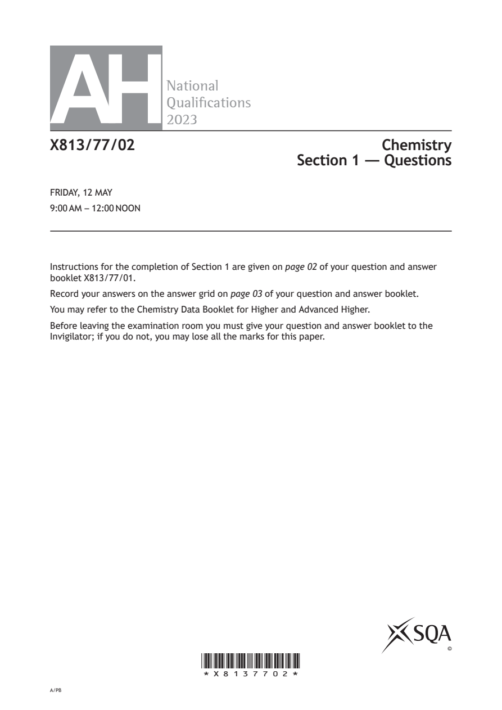
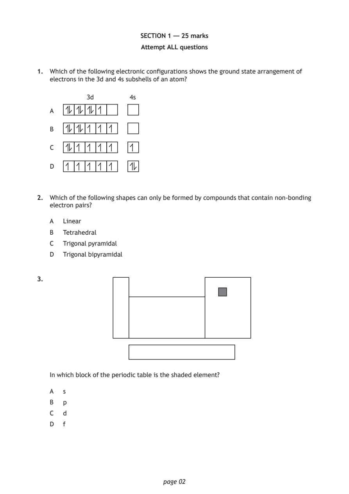
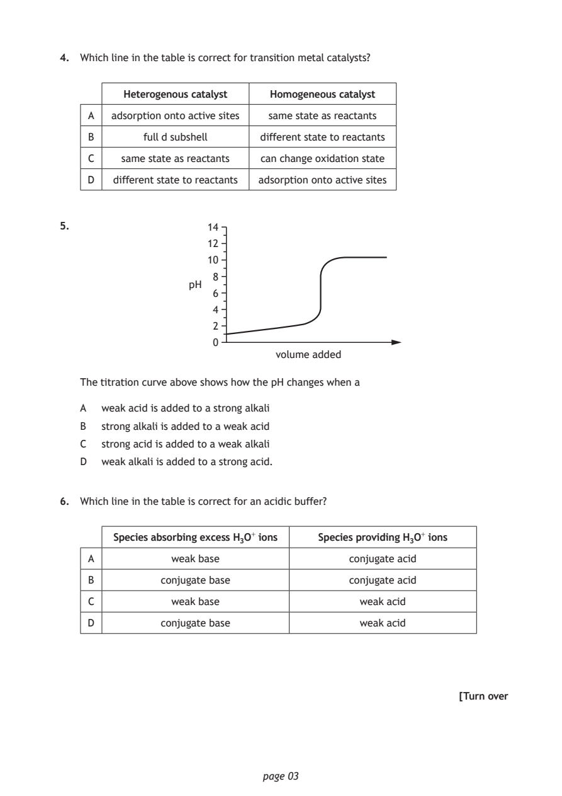
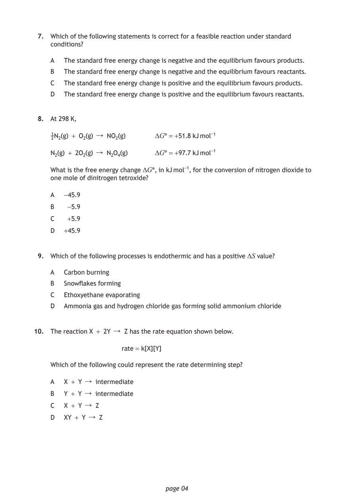
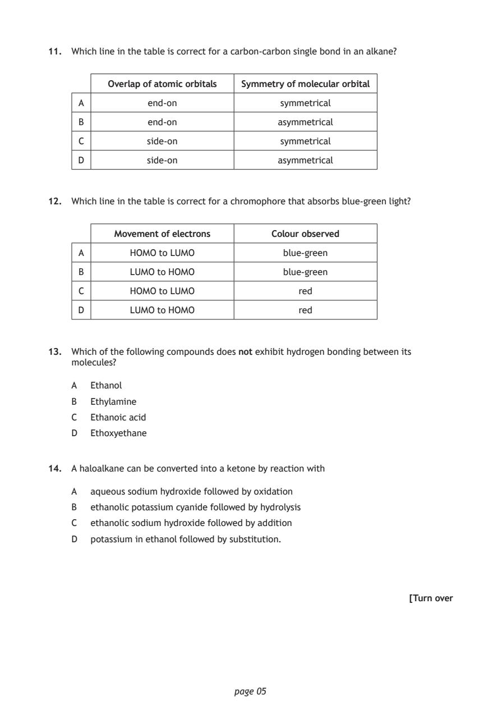
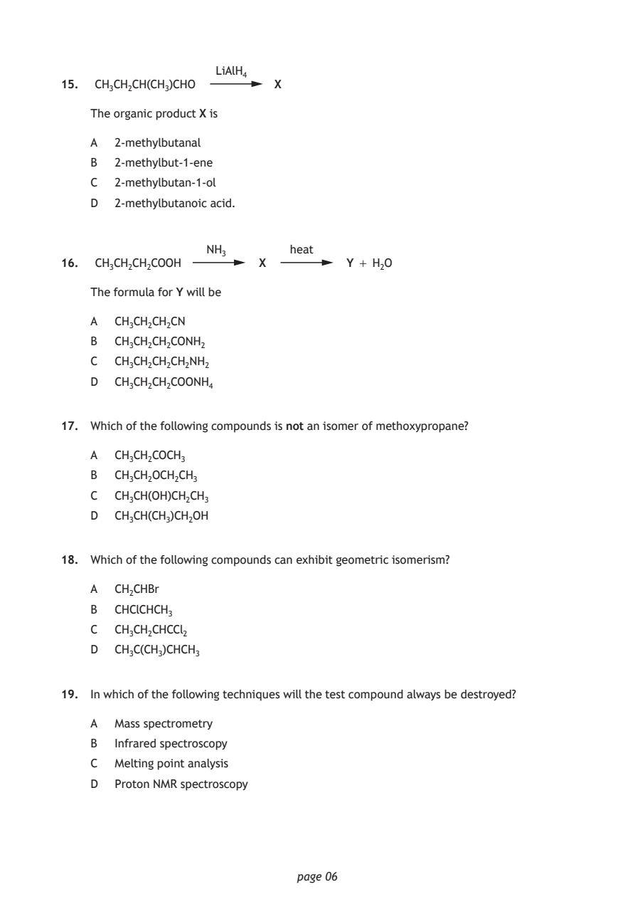
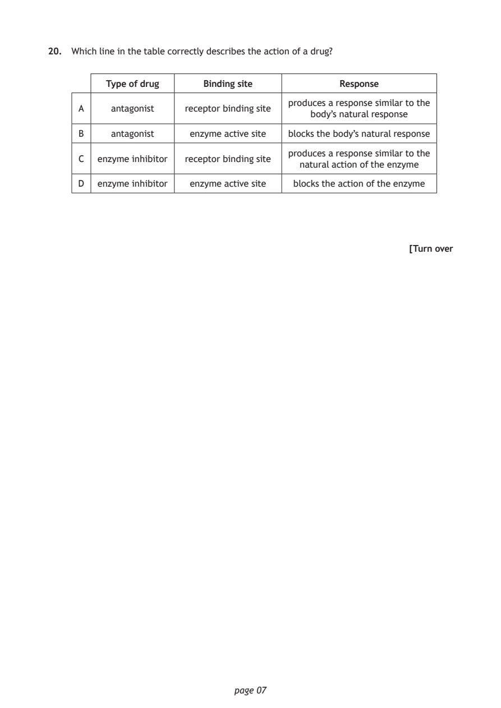
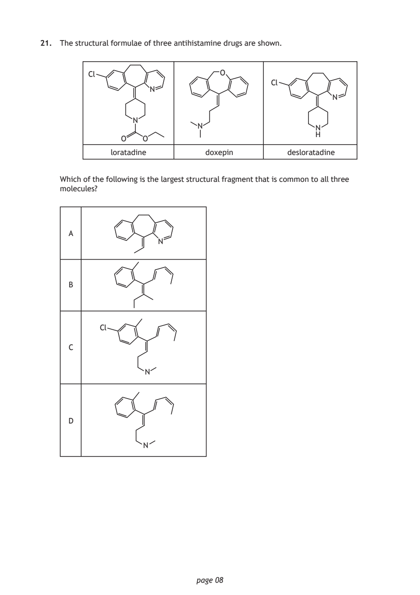
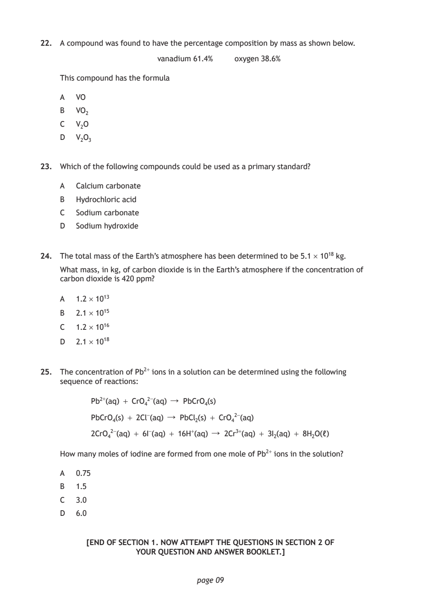
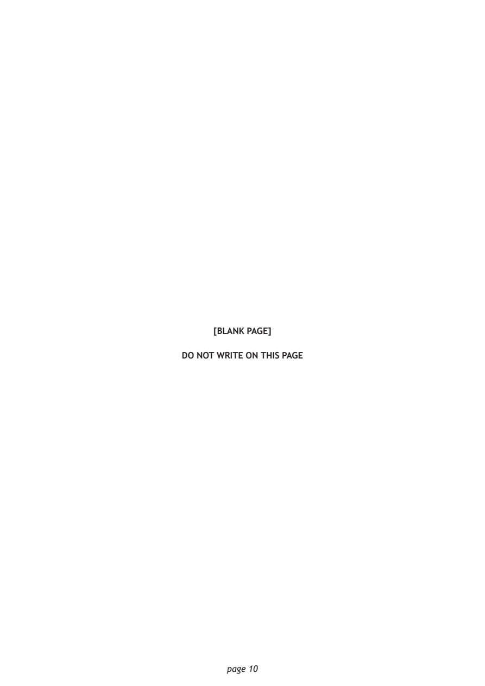

2023 Advanced Higher Chemistry - Paper 1 questions
Source: Scottish Qualifications Authority (SQA) / Qualifications Scotland. This is a StemInteract HTML companion, not an official HTML edition. Selectable text is supplied alongside original page images. Use the images or original PDF for equations, powers, fractions, vector notation, tables and diagrams; text extraction cannot fully preserve mathematical layout.
Jump to a question
PDF page 1

Selectable page text
AH
National
Qualications
2023
X813/77/02 Chemistry
Section 1 — Questions
FRIDAY, 12 MAY
9:00 AM – 12:00 NOON
Instructions for the completion of Section 1 are given on page 02 of your question and answer
booklet X813/77/01.
Record your answers on the answer grid on page 03 of your question and answer booklet.
You may refer to the Chemistry Data Booklet for Higher and Advanced Higher.
Before leaving the examination room you must give your question and answer booklet to the
Invigilator; if you do not, you may lose all the marks for this paper.
©
*X8137702*
A/PBPDF page 2
Paper 1, Question 1Paper 1, Question 2Paper 1, Question 3
Selectable page text
SECTION 1 — 25 marks
Attempt ALL questions
1. Which of the following electronic configurations shows the ground state arrangement of
electrons in the 3d and 4s subshells of an atom?
3d 4s
A
B
C
D
2. Which of the following shapes can only be formed by compounds that contain non‑bonding
electron pairs?
A Linear
B Tetrahedral
C Trigonal pyramidal
D Trigonal bipyramidal
3.
In which block of the periodic table is the shaded element?
A s
B p
C d
D f
page 02PDF page 3
Paper 1, Question 4Paper 1, Question 5Paper 1, Question 6
Selectable page text
4. Which line in the table is correct for transition metal catalysts?
Heterogenous catalyst Homogeneous catalyst
A adsorption onto active sites same state as reactants
B full d subshell different state to reactants
C same state as reactants can change oxidation state
D different state to reactants adsorption onto active sites
5. 14
12
10
8
pH
6
4
2
0
volume added
The titration curve above shows how the pH changes when a
A weak acid is added to a strong alkali
B strong alkali is added to a weak acid
C strong acid is added to a weak alkali
D weak alkali is added to a strong acid.
6. Which line in the table is correct for an acidic buffer?
Species absorbing excess H₃O⁺ ions Species providing H₃O⁺ ions
A weak base conjugate acid
B conjugate base conjugate acid
C weak base weak acid
D conjugate base weak acid
[Turn over
page 03PDF page 4
Paper 1, Question 7Paper 1, Question 8Paper 1, Question 9Paper 1, Question 10
Selectable page text
7. Which of the following statements is correct for a feasible reaction under standard
conditions?
A The standard free energy change is negative and the equilibrium favours products.
B The standard free energy change is negative and the equilibrium favours reactants.
C The standard free energy change is positive and the equilibrium favours products.
D The standard free energy change is positive and the equilibrium favours reactants.
8. At 298 K,
1N₂(g) + O₂(g) ↓ NO₂(g) ΔG° = +51.8 kJ mol⁻¹
2
N₂(g) + 2O₂(g) ↓ N₂O₄(g) ΔG° = +97.7 kJ mol⁻¹
What is the free energy change ΔG°, in kJ mol⁻¹, for the conversion of nitrogen dioxide to
one mole of dinitrogen tetroxide?
A −45.9
B −5.9
C +5.9
D +45.9
9. Which of the following processes is endothermic and has a positive ΔS value?
A Carbon burning
B Snowflakes forming
C Ethoxyethane evaporating
D Ammonia gas and hydrogen chloride gas forming solid ammonium chloride
10. The reaction X + 2Y ↓ Z has the rate equation shown below.
rate = k[X][Y]
Which of the following could represent the rate determining step?
A X + Y ↓ intermediate
B Y + Y ↓ intermediate
C X + Y ↓ Z
D XY + Y ↓ Z
page 04PDF page 5
Paper 1, Question 11Paper 1, Question 12Paper 1, Question 13Paper 1, Question 14
Selectable page text
11. Which line in the table is correct for a carbon‑carbon single bond in an alkane?
Overlap of atomic orbitals Symmetry of molecular orbital
A end‑on symmetrical
B end‑on asymmetrical
C side‑on symmetrical
D side‑on asymmetrical
12. Which line in the table is correct for a chromophore that absorbs blue‑green light?
Movement of electrons Colour observed
A HOMO to LUMO blue‑green
B LUMO to HOMO blue‑green
C HOMO to LUMO red
D LUMO to HOMO red
13. Which of the following compounds does not exhibit hydrogen bonding between its
molecules?
A Ethanol
B Ethylamine
C Ethanoic acid
D Ethoxyethane
14. A haloalkane can be converted into a ketone by reaction with
A aqueous sodium hydroxide followed by oxidation
B ethanolic potassium cyanide followed by hydrolysis
C ethanolic sodium hydroxide followed by addition
D potassium in ethanol followed by substitution.
[Turn over
page 05PDF page 6
Paper 1, Question 15Paper 1, Question 16Paper 1, Question 17Paper 1, Question 18Paper 1, Question 19
Selectable page text
LiAlH₄
15. CH₃CH₂CH(CH₃)CHO X
The organic product X is
A 2‑methylbutanal
B 2‑methylbut‑1‑ene
C 2‑methylbutan‑1‑ol
D 2‑methylbutanoic acid.
NH₃ heat
16. CH₃CH₂CH₂COOH X Y + H₂O
The formula for Y will be
A CH₃CH₂CH₂CN
B CH₃CH₂CH₂CONH₂
C CH₃CH₂CH₂CH₂NH₂
D CH₃CH₂CH₂COONH₄
17. Which of the following compounds is not an isomer of methoxypropane?
A CH₃CH₂COCH₃
B CH₃CH₂OCH₂CH₃
C CH₃CH(OH)CH₂CH₃
D CH₃CH(CH₃)CH₂OH
18. Which of the following compounds can exhibit geometric isomerism?
A CH₂CHBr
B CHClCHCH₃
C CH₃CH₂CHCCl₂
D CH₃C(CH₃)CHCH₃
19. In which of the following techniques will the test compound always be destroyed?
A Mass spectrometry
B Infrared spectroscopy
C Melting point analysis
D Proton NMR spectroscopy
page 06PDF page 7
Paper 1, Question 20
Selectable page text
20. Which line in the table correctly describes the action of a drug?
Type of drug Binding site Response
produces a response similar to the
A antagonist receptor binding site
body’s natural response
B antagonist enzyme active site blocks the body’s natural response
produces a response similar to the
C enzyme inhibitor receptor binding site
natural action of the enzyme
D enzyme inhibitor enzyme active site blocks the action of the enzyme
[Turn over
page 07PDF page 8
Paper 1, Question 21
Selectable page text
21. The structural formulae of three antihistamine drugs are shown.
Cl O
Cl
N
N
N
N N
H
O O
loratadine doxepin desloratadine
Which of the following is the largest structural fragment that is common to all three
molecules?
A
N
B
Cl
C
N
D
N
page 08PDF page 9
Paper 1, Question 22Paper 1, Question 23Paper 1, Question 24Paper 1, Question 25
Selectable page text
22. A compound was found to have the percentage composition by mass as shown below.
vanadium 61.4% oxygen 38.6%
This compound has the formula
A VO
B VO₂
C V₂O
D V₂O₃
23. Which of the following compounds could be used as a primary standard?
A Calcium carbonate
B Hydrochloric acid
C Sodium carbonate
D Sodium hydroxide
24. The total mass of the Earth’s atmosphere has been determined to be 5.1 × 10¹⁸ kg.
What mass, in kg, of carbon dioxide is in the Earth’s atmosphere if the concentration of
carbon dioxide is 420 ppm?
A 1.2 × 10¹³
B 2.1 × 10¹⁵
C 1.2 × 10¹⁶
D 2.1 × 10¹⁸
25. The concentration of Pb²⁺ ions in a solution can be determined using the following
sequence of reactions:
Pb²⁺(aq) + CrO₄²⁻(aq) ↓ PbCrO₄(s)
PbCrO₄(s) + 2Cl⁻(aq) ↓ PbCl₂(s) + CrO₄²⁻(aq)
2CrO₄²⁻(aq) + 6I⁻(aq) + 16H⁺(aq) ↓ 2Cr³⁺(aq) + 3I₂(aq) + 8H₂O(ℓ)
How many moles of iodine are formed from one mole of Pb²⁺ ions in the solution?
A 0.75
B 1.5
C 3.0
D 6.0
[END OF SECTION 1. NOW ATTEMPT THE QUESTIONS IN SECTION 2 OF
YOUR QUESTION AND ANSWER BOOKLET.]
page 09PDF page 10

Selectable page text
[BLANK PAGE]
DO NOT WRITE ON THIS PAGE
page 10PDF page 11

Selectable page text
[BLANK PAGE]
DO NOT WRITE ON THIS PAGE
page 11PDF page 12

Selectable page text
[BLANK PAGE]
DO NOT WRITE ON THIS PAGE
page 12